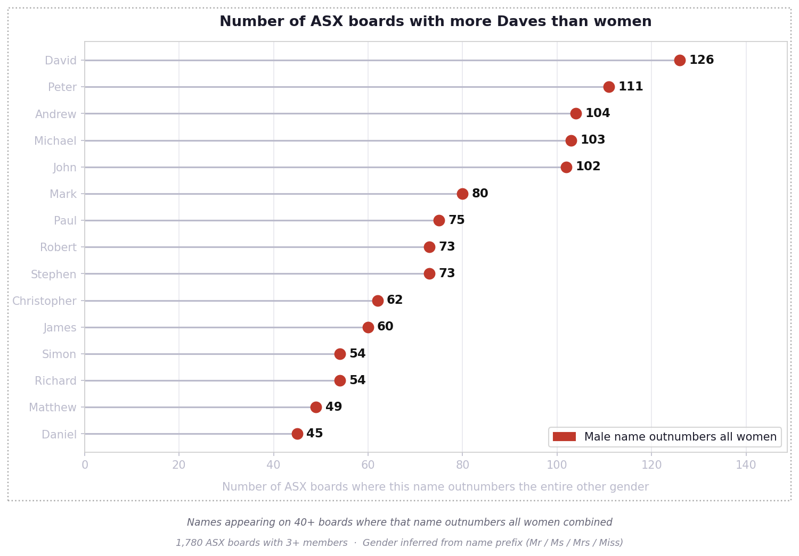
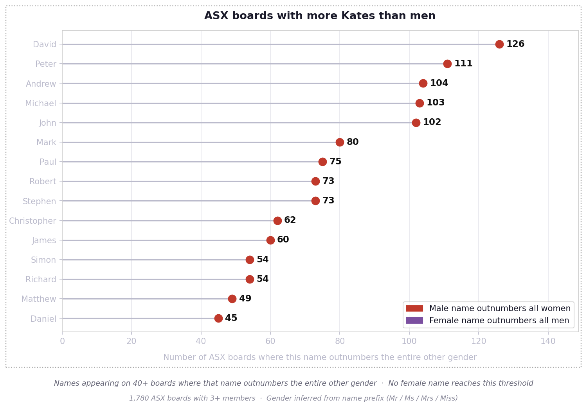
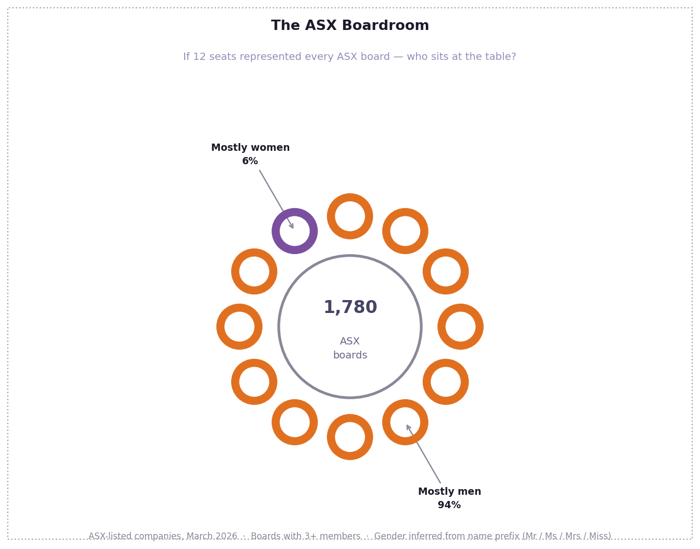
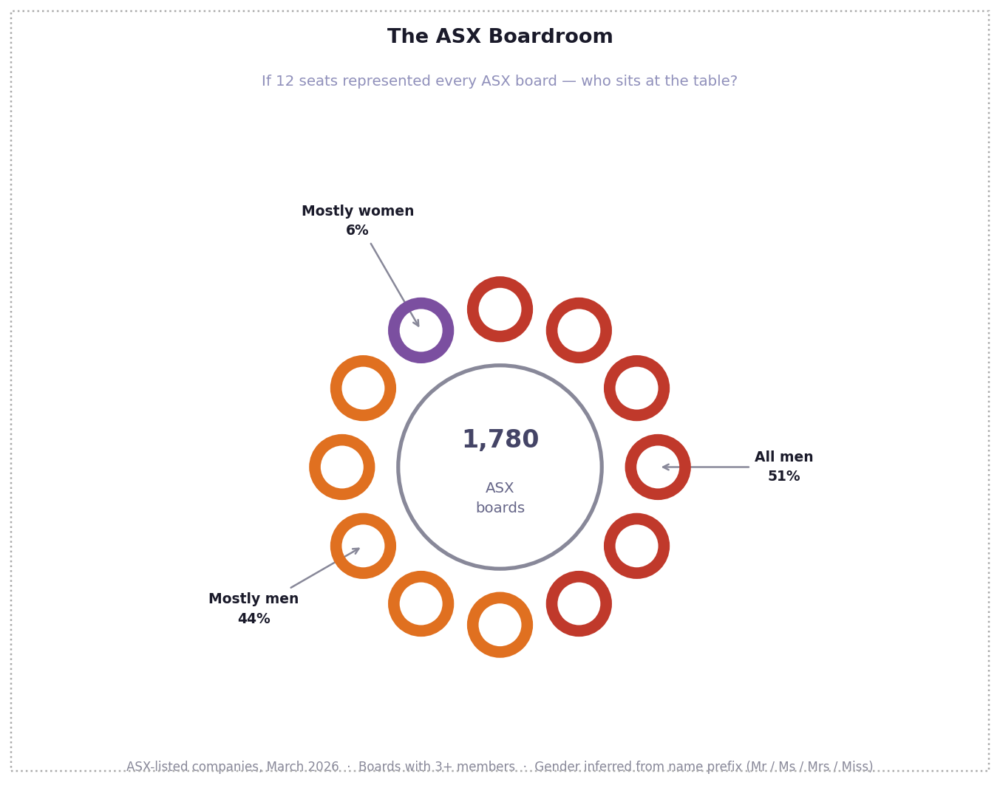
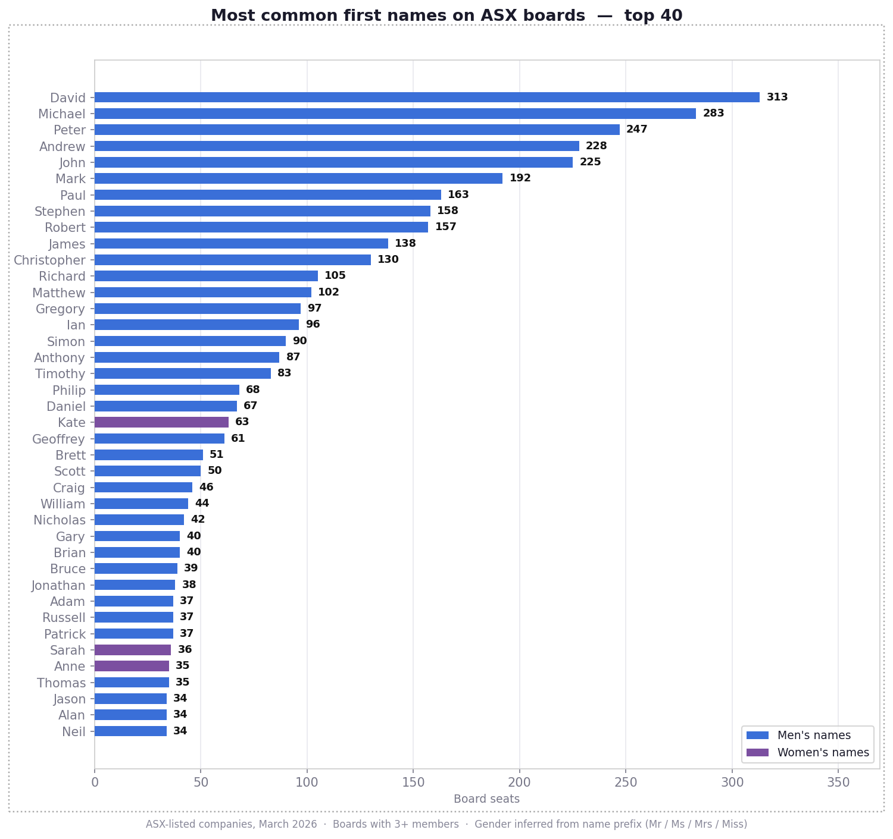
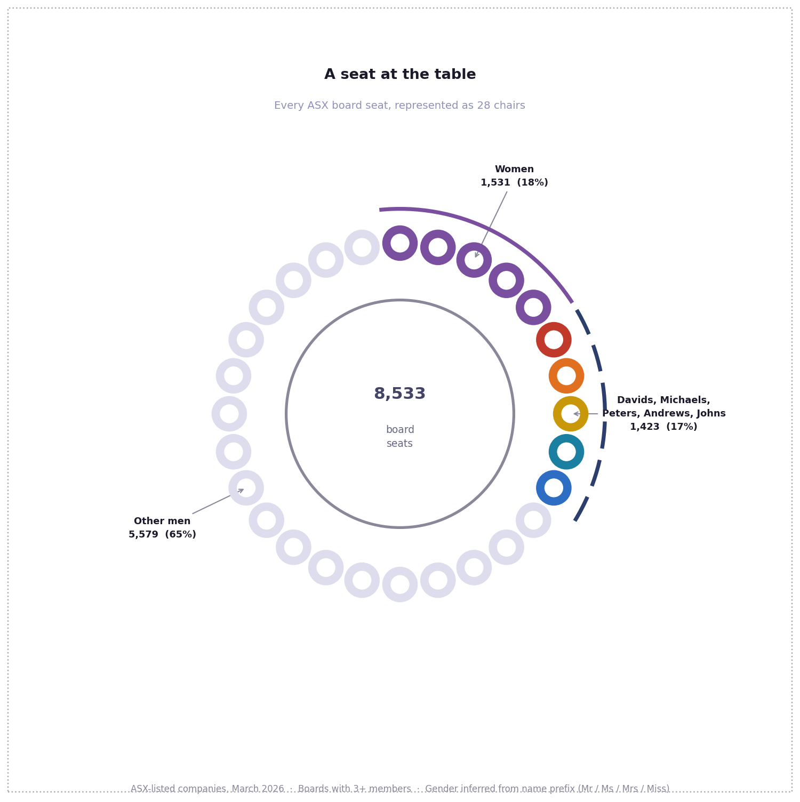

Matthew, Mark, Luke and John — the gospel according to ASX
Dr Seuss famously wrote about “Too many Daves”. But are there too many Daves on the board? Let’s have a look.
1. Number of boards with more Daves than women
Around the table of 126 ASX boards, there are more Davids than there are women.
At 111 tables there are more Peters; at 104 there are more Andrews; at 103 there are more Michaels.

2. Number of boards with more Kates than men
Are there also too many Kates? Janes? Michelles?

No.
3. Who’s at the table
Did you know that 12% of ASX boards have no women on them? Just joking; it’s 51%.
Most boards are mostly men:

4. Not all men
But not all boards are all men:

5. Who are we shaking hands with
David, Michael, Peter and Andrew.
Matthew, Mark, Luke and John.
Kate.


Inspiration: Deb Verhoeven’s work on Daversity: Australian Research: The Daversity Problem.
Data: Board member data is fetched from the MarkitDigital API used by the ASX website (no API key required). Gender is inferred from name prefixes (Mr/Sir/Lord → male; Ms/Mrs/Miss/Dame → female). Titles like Dr or Prof. are classified as unknown (~4%). data/directors.csv — one row per board seat: ticker, company, raw_name, clean_name, first_name, title, gender, is_board.
Usage: Requires Python 3 and matplotlib. Run the scripts in this order:
python3 collect_boards.py # fetch board data from the ASX/MarkitDigital API (~20 min); saves data/directors.csv
python3 chart_names_comparison.py # charts 1 & 2
python3 chart_boardroom.py # charts 3 & 4
python3 chart_top_names.py # chart 5
python3 chart_boardroom_names.py # named seats chart
Name combinations: Some name variants are combined and counted together. Men: David+Dave, Michael+Mike+Mick, John+Jon, Stephen+Steven+Steve, James+Jim+Jamie, Christopher+Chris, Matthew+Matt, Timothy+Tim, Philip+Phillip+Phil, Peter+Pete, Andrew+Andy, Gregory+Greg, Geoffrey+Geoff. Women: Kate+Katherine+Kathryn+Kathy+Katie, Sarah+Sara, Anne+Anna+Ann+Annie, Jennifer+Jenny, Christine+Christina, Susan+Sue.
Licence: Code is released under the MIT Licence. Charts are released under CC BY 4.0 — you may use and share them with attribution. The text of this page is © Anna Syme, all rights reserved.
Built by Anna Syme and Claude (Anthropic). · GitHub